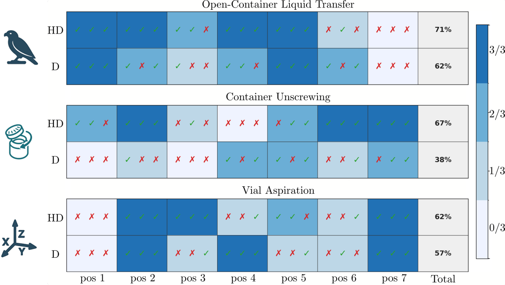

Despite the fact that visuomotor-based policies obtained via imitation learning demonstrate good performances in complex manipulation tasks, they usually struggle to achieve the same accuracy and speed as traditional control based methods. In this work, we introduce Hybrid-Diffusion models that combine open-loop routines with visuomotor diffusion policies. We develop Teleoperation Augmentation Primitives (TAPs) that allow the operator to perform predefined routines, such as locking specific axes, moving to perching waypoints, or triggering task-specific routines seamlessly during demonstrations. Our Hybrid-Diffusion method learns to trigger such TAPs during inference. We validate the method on challenging real-world tasks: Vial Aspiration, Open-Container Liquid Transfer, and container unscrewing.
Hybrid-Diffusion
Overview of our Hybrid-Diffusion Model; during teleoperation, the expert can trigger a Teleoperation Augmentation Primitive (TAP) either via speech or (AR) controller inputs. The Hybrid-Diffusion model learns to also trigger such TAP routines during execution, making use of routines during tasks.
We evaluated policies trained on three tasks, among seven novel starting positions - each repeated three times.
The robot is equipped with a syringe. The task is to draw the liquid substances from the right chemical container and deposit them into the left container. The TAP Perching-waypoints makes this task easier as it allows the operator to always go to an initial perching waypoint, draw the liquid, activate another perching waypoint that brings the target container in clear view to deposit the liquid.
All experiments: Open-Container Liquid Transfer
The robot is equipped with a syringe and has to draw liquid out of a vial that is mounted on a sphere that enables arbitrary rotations (up to the point no liquid is flowing out of the vial). As the rotational alignment of the syringe needle with the vial is quite challenging the operator makes use of the Axis locking TAP - specifically to lock all rotational axes once the desired rotation is achieved.
All experiments: Vial Aspiration
A second robot arm (not controlled by the policy) holds a container with a threaded cap. The task is to bring the robot into position over the container, grasp the lid and unscrew it from the container and place it on the table. In this task, an open-loop routine TAP, specifically an unscrewing routine, is essential for task success. The operator simply brings the robot into position, ready to grasp the lid, and triggers the TAP to initiate the routine.
All experiments: Container Unscrewing